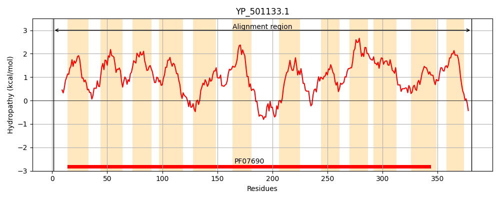
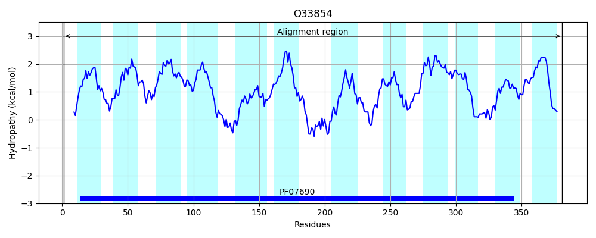
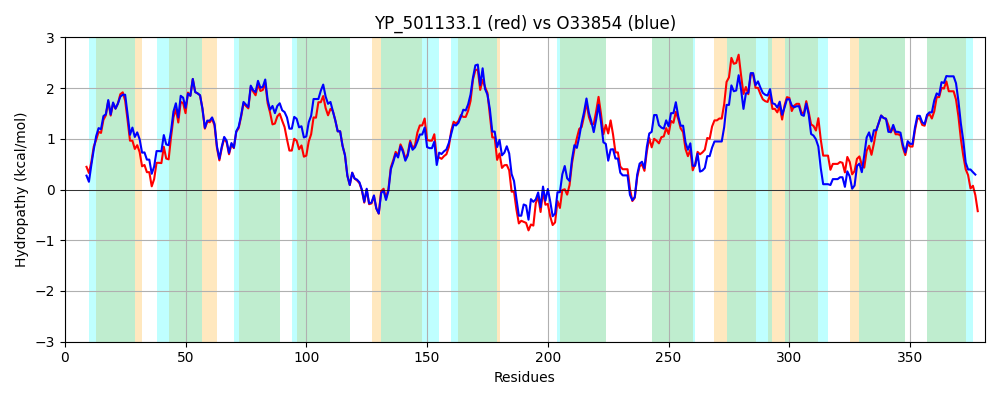

Hit Accession: O33854
Hit TCID: 2.A.1.8.15
Hit Description: gnl|BL_ORD_ID|7118 gnl|TC-DB|O33854|2.A.1.8.15 Probable nitrate transporter narT OS=Staphylococcus carnosus (strain TM300) GN=narT PE=1 SV=1
Mach Len: 381
e:0.000000
Query TMS Count : 12
Hit TMS Count: 12
TMS-Overlap Score: 10.700000
Predicted Substrates:CHEBI:71263;nitrate
BLAST Alignment:
Score: 1547 , Bit scores: 600 bits, E-value: 0.0e+00, Alignment length: 381, Percentage identity: 75
Query: 1 MYKTKGGFQLTLQTLSLVVGFMAWSIIAPLMPFIKQDVNVTEGQISIILAIPVILGSVLRVPFGYLTNIVGAKWVFFTSFIVLLFPIFFLSQAQTPGMLMASGFFLGVGGAIFSVGVTSVPKYFPKEKVGLANGIYGMGNIGTAVSSFLAPPIAGIIGWQTTVRSYLIIIALFALIMFIFGDTQERKIKVPLMAQMKTLSKNYKLYYLSYWYFITFGAFVAFGIFLPNYLVNHFGIDKVDAGIRSGVFIALATFLRPIGGILGDKFNAVKVLMIDFVVMIIGAIILGISDHIALFTVGCLTISICAGIGNGLIFKLVPSYFLNEAGSANGIVSMMGGLGGFFPPLVITYVANLTGSSHLAFIFLAVFGCIALFTMRHLYQK 381
M K+KGG QLT+QTLSLV GFM WSIIAPLMP I QD+ +T QISI+LAIPVILGSVLR+PFGYLTNI+GAKWVFF+SFI+LLFPIF LSQAQ+ MLM +GFFLGVGGA+FSVGVTS+PKYFPK+KVGLANGIYGMGN+GTAVSSFLAPPIAG IGWQ+TVR YLI++A+FA++MF GD +E K+K+PL+AQ K L K+ + YYLS+WYFITFG+FVAFGIFLP YLV+H+ + VDAGIR+G+FIA+ATFLRP+GGI+GDK +AVK L +DF+ MIIGAIILGI++ + LFTVGCLT+S+CAGIGNGL+FKLVP YF EAG ANGIVSMMGGLGGFFPPLVITYV ++TG+SHLAFIFLA+FG +AL TM HL +K
Sbjct: 1 MNKSKGGLQLTVQTLSLVAGFMVWSIIAPLMPMISQDIKITSSQISIVLAIPVILGSVLRIPFGYLTNIIGAKWVFFSSFIILLFPIFLLSQAQSVNMLMLAGFFLGVGGAVFSVGVTSIPKYFPKDKVGLANGIYGMGNLGTAVSSFLAPPIAGAIGWQSTVRLYLIVMAVFAIVMFFLGDAKEPKVKIPLVAQTKDLLKDLRTYYLSFWYFITFGSFVAFGIFLPKYLVDHYELTTVDAGIRAGIFIAIATFLRPLGGIIGDKIDAVKALKVDFLFMIIGAIILGIANDMILFTVGCLTVSVCAGIGNGLVFKLVPQYFQKEAGVANGIVSMMGGLGGFFPPLVITYVTSITGTSHLAFIFLALFGVLALVTMWHLSKK 381 | Protein Hydropathy Plots: |
|---|
|  |  |
Pairwise Alignment-Hydropathy Plot:
|
|---|
|  |